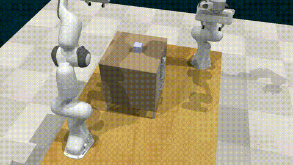
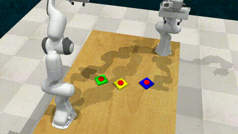

Simulation Results
Simulation in RLBench
RLBench-COLLAB task suite used for evaluation.

Successful Task Execution Examples

Stack Blocks

Pyramid Stacking

Put into Drawer

Put into Saucepan

Push Buttons

Shell Game

Sort Items

Handover Item

Insert Ring

Push Box
Stack Blocks
Pyramid Stacking
Quantitative Results
Task Success (TS↑), #Subtasks (↑), Subtask Success (STS↑)
| Model | Sequential Coordination | Coupled Interaction | |||||||||||||
|---|---|---|---|---|---|---|---|---|---|---|---|---|---|---|---|
| Stack Blocks | Pyramid Stacking | Put in Saucepan | Push Box Target | Put in Drawer | |||||||||||
| TS | #ST | STS | TS | #ST | STS | TS | #ST | STS | TS | #ST | STS | TS | #ST | STS | |
| Centralized Planner (Oracle) | 0.80 | 10.9 | 1.00 | 0.60 | 11.0 | 0.90 | 0.80 | 8.0 | 0.93 | 1.00 | 16.0 | 1.00 | 1.00 | 10.0 | 1.00 |
| VoxPoser | 0.00 | 10.0 | 0.68 | 0.00 | 11.8 | 0.36 | 0.50 | 7.0 | 0.79 | 0.00 | 11.2 | 0.76 | 0.00 | 9.0 | 0.55 |
| PRISM (Ours) | 0.80 | 11.0 | 0.94 | 0.60 | 11.0 | 0.83 | 0.70 | 8.0 | 0.81 | 0.70 | 14.0 | 0.72 | 0.50 | 8.0 | 0.82 |
| Model | Parallel Coordination | Behavior-Aware Reasoning | |||||||||||||
|---|---|---|---|---|---|---|---|---|---|---|---|---|---|---|---|
| Sort Items | Push Buttons | Insert Rings | Shell Game | Handover Item | |||||||||||
| TS | #ST | STS | TS | #ST | STS | TS | #ST | STS | TS | #ST | STS | TS | #ST | STS | |
| Centralized Planner (Oracle) | 0.90 | 10.0 | 0.99 | 1.00 | 8.0 | 1.00 | 1.00 | 8.0 | 1.00 | 0.90 | 9.4 | 0.98 | 1.00 | 12.0 | 1.00 |
| VoxPoser | 0.40 | 10.2 | 0.74 | 0.30 | 8.0 | 0.40 | 0.00 | 12.8 | 0.13 | 0.00 | 14.5 | 0.58 | 0.00 | 10.0 | 0.46 |
| PRISM (Ours) | 0.90 | 10.0 | 0.98 | 1.00 | 8.0 | 1.00 | 0.60 | 15.0 | 0.95 | 0.70 | 13.0 | 0.96 | 0.70 | 12.0 | 0.91 |